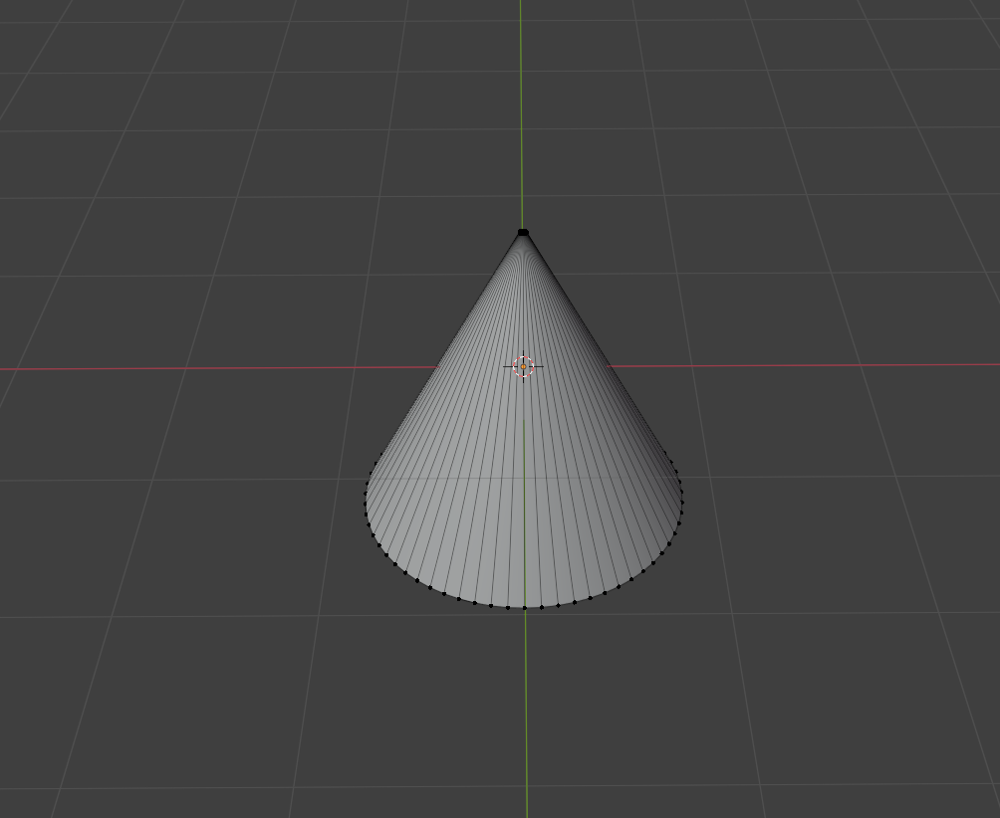
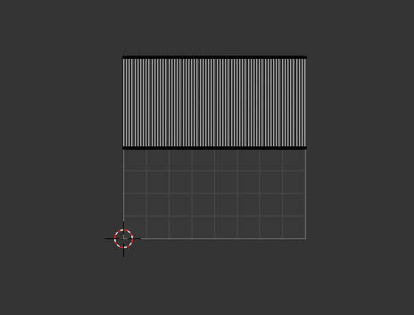
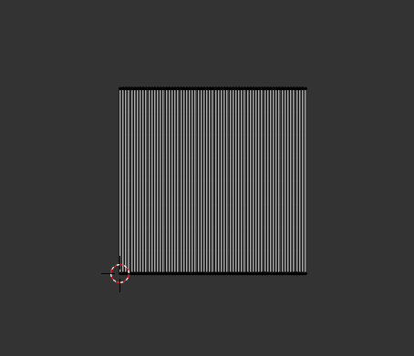
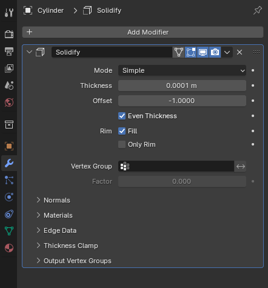
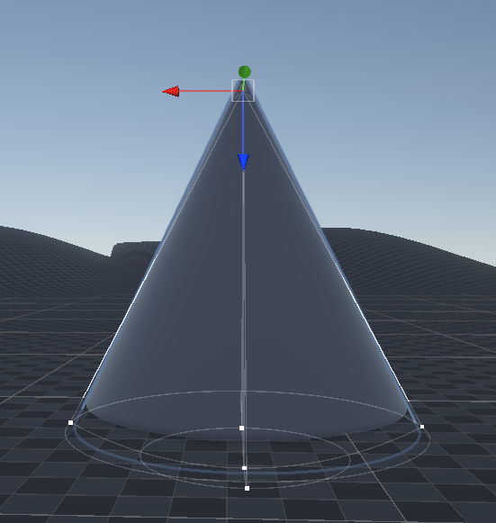
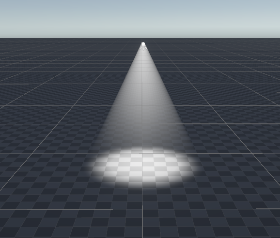

By Saif Jouda | June. 6 2024
Volumetric lighting, also known as "god rays," is a lighting technique commonly used in computer graphics to simulate the way light interacts with a medium such as fog, smoke, dust, or water. This technique adds realism to scenes by simulating the scattering and absorption of light as it passes through these media, creating visible beams or shafts of light.
There are several ways to create volumetric lighting, but most techniques involve casting rays from the camera through the scene, sampling the medium at intervals along each ray, and calculating lighting effects such as scattering and absorption at these points.
Volumetric lighting is computationally intensive and requires significant GPU resources. This can lead to performance issues, especially on lower-end hardware or in complex scenes with many light sources and high-density volumetric effects.
Ensuring that volumetric lighting works consistently across different platforms (PC, consoles, mobile devices) can be challenging. Different hardware capabilities and performance characteristics can necessitate platform-specific adjustments and optimizations.
Currently, the High Definition Render Pipeline (HDRP) is the only Unity rendering pipeline that offers built-in volumetric lighting. Users with projects created using the Universal Render Pipeline (URP) or the Built-in Render Pipeline will need to use third-party assets and plugins to add volumetric lighting effects.
There is a way to mimic volumetric lighting effects in Unity using shapes and Shader Graph. This approach is lightweight in terms of performance and is compatible with both HDRP and URP.
Start by creating a cylinder in Blender, removing its top and bottom faces, and narrowing the upper section. This should result in a cone or 'megaphone' shape.
Extend the vertices to cover the entire UV map. This step is crucial for the shader we are going to create.
 To ensure the volumetric lighting effect is visible from all angles, we need to make the cylinder double-sided. Add a Solidify modifier and set the thickness to a very small value, such as 0.0001m.
Create a spotlight in Unity and import the 'cone' we created in Blender. Parent the cone to the spotlight, then rotate and scale the cone object so that it aligns with the light cone created by the spotlight.
Create an unlit shader graph.
Create a color property and a float property. Set the color mode to HDR to allow for increased intensity, enhancing the volumetric light effect when using post-processing. Create a Fresnel Effect node, connect the float property to it, then connect the Fresnel Effect output to a One Minus node. This will make the center of the volumetric light brighter. Combine the color and the inverted Fresnel effect using a Multiply node and connect it to the Base Color.
Create a UV node and split it. Plug the green channel into a Clamp node, then connect the Clamp output to the T input of two Lerp nodes. For the first Lerp node, set its first value to 0, connect a second float property to the second input, and then connect the output to the second input of the other Lerp node. Finally, connect the output of the second Lerp node to the Alpha. This setup creates a gradient transparency effect from the top to the bottom of the cone.
Set the color to match the light color and increase its intensity to around +4. For the float properties, set the first float to around 0.1 and the second to 0.2. Adjust these values to find the best fit.
The final product is a volumetric light that is both lightweight and compatible.
